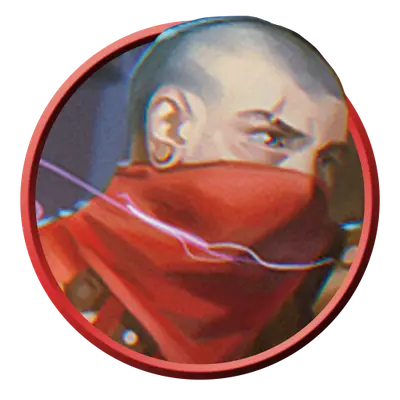

Бандит-обманщик
Bandit Deceiver
Средний или Маленький Гуманоид, Нейтральный

Класс Защиты 16 Инициатива +6 (16)
Хиты 130 (20к8 + 40)
Скорость 30 футов
| мод | спас | ||
|---|---|---|---|
| СИЛ | 8 | −1 | −1 |
| ЛОВ | 16 | +3 | +6 |
| ТЕЛ | 14 | +2 | +2 |
| мод | спас | ||
|---|---|---|---|
| ИНТ | 17 | +3 | +6 |
| МДР | 12 | +1 | +1 |
| ХАР | 16 | +3 | +3 |
Чувства пассивное Восприятие 14
Языки Общий, Воровской жаргон
Опасность 7 (2 900 опыта; БВ +3)
Действия
Мультиатака. Бандит совершает три атаки Кинжалом.
Кинжал. Бросок рукопашной или дальнобойной атаки: +6, досягаемость 5 фт. или дистанция 20/60 фт. Попадание: 8 (2к4 + 3) Колющего урона плюс 10 (3к6) урона Ядом.
Ослепляющая вспышка (Перезарядка 4–6). Спасбросок Телосложения: Сл 14, каждое существо в 10-футовой Сфере с центром в видимой бандтом точке в 120 футах. Провал: 13 (3к6 + 3) урона Излучением, и цель Ослеплена до начала следующего хода бандита. Успех: Только половина урона.
Сотворение заклинаний. Бандит сотворяет одно из следующих заклинаний (заклинательная характеристика — Интеллект, Сл спасброска заклинаний 14):
Неограниченно: Волшебная рука, Малая иллюзия, Маскировка
1/день каждое: Доспехи мага, КЗ, Образ, Удержание личности, версия 4-го уровня
Бонус мастерства +3
Среда обитания Любая
Сокровища Любые
Бандиты
Преступники и негодяи
С помощью угроз бандиты получают всё, что захотят. К этим преступникам относятся члены банд, головорезы и наёмники вне закона. Однако не всеми бандитами движет жадность. Некоторые из них стали вести такую жизнь из-за несправедливых законов, безысходности своего положения или под принуждением безжалостных главарей.
Совершите бросок по таблице «Мотив бандита» или выберите сами, почему бандит совершает преступления.
Мотив бандита
| 1к6 | Бандит… |
| 1 | Борется с угнетателями. |
| 2 | Был солдатом. Брошенный своим народом, теперь он берёт сам то, что ему обещали. |
| 3 | Состоит в банде, для которой все остальные — враги. |
| 4 | С неохотой служит злобному главарю. |
| 5 | Тайно выполняет задание правительства или местного правителя с целью посеять хаос. |
| 6 | Просто пытается выжить. |
С помощью магии бандиты-обманщики скрывают свою преступную деятельность или отвлекают внимание яркими эффектами.